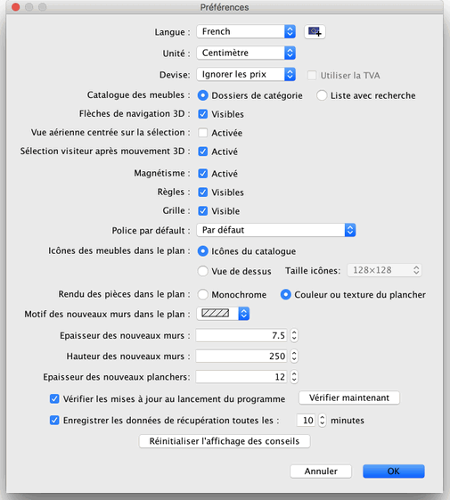

Pour éditer les préférences de Sweet Home 3D, choisissez Sweet Home 3D > Préférences... sous
Mac OS X ou Fichier > Préférences... sous les autres systèmes d'exploitation.

Dans le panneau des préférences, vous pouvez choisir la Langue utilisée dans l'interface utilisateur
de Sweet Home 3D et l'Unité utilisée
pour dessiner les règles et la grille du plan du
logement, et pour afficher les longueurs.
Le bouton à côté de la liste déroulante Langue vous permet aussi d'importer des fichiers de langues avec une extensions SH3L.
Les boutons radio Dossiers de catégorie et Liste
avec recherche permettent de choisir le mode d'affichage du catalogue
de meubles dans chaque fenêtre Sweet Home 3D.
La boîte à cocher Flèches de navigation 3D
permet d'afficher ou non les boutons en forme de flèches d'aide
à la navigation dans la vue 3D.
La boîte à cocher Magnétisme active ou
désactive le magnétisme utilisé dans le plan du
logement au cours du positionnement des meubles, et du dessin des murs, des pièces et des cotes.
La boîte à cocher Règles permet de rendre
visibles ou invisibles les règles affichées en haut et
à gauche du plan.
La boîte à cocher Grille permet de rendre visible
ou invisible la grille affichée sous le plan.
Les boutons radio Icônes du catalogue et Vue de dessus
permettent de choisir comment seront dessinés les meubles dans
le plan (voir les images ci-dessous).
Les boutons radio Monochrome et Couleur ou texture
du plancher permettent de choisir si les pièces doivent être
remplies dans le plan avec la couleur ou de la texture que vous avez
choisies pour leur plancher, ou en gris (en blanc à l'impression).
La liste déroulante Motif des murs dans le plan permet
de choisir le motif de remplissage des murs dans le plan.
La valeur de l'Epaisseur des nouveaux murs détermine l'épaisseur des murs qui seront créés
une fois que le panneau des préférences sera fermé.
La valeur de la Hauteur des nouveaux murs détermine la hauteur des futurs murs.
La valeur de l'Epaisseur des nouveaux planchers détermine l'épaisseur des planchers des futurs niveaux.
La valeur du champ associé à la boîte à
cocher Enregistrer les données de récupération
détermine le délai en minutes qui s'écoule entre
deux enregistrements des logements ouverts. Ceux-ci sont automatiquement
enregistrés dans des fichiers privés, qui seront utilisés
à des fins de récupération au prochain lancement
de Sweet Home 3D si le programme plante.
Finalement, le bouton Réinitialiser l'affichage des conseils
réinitialise les réponses que vous avez données
aux boîtes à cocher Ne plus afficher ce conseil
affichées dans les conseils qui apparaissent quand vous cliquez
sur certains outils. Ceci implique que tous les dialogues où
vous avez coché cette option réapparaîtront au moment où
vous cliquerez à nouveau sur ces outils.
 |
|
 |
Rendu du plan par défaut avec les icônes du catalogue,
les planchers monochromes et les murs hachurés |
Rendu du plan avec les meubles vus de dessus,
les planchers colorés, et les murs en noir |
|